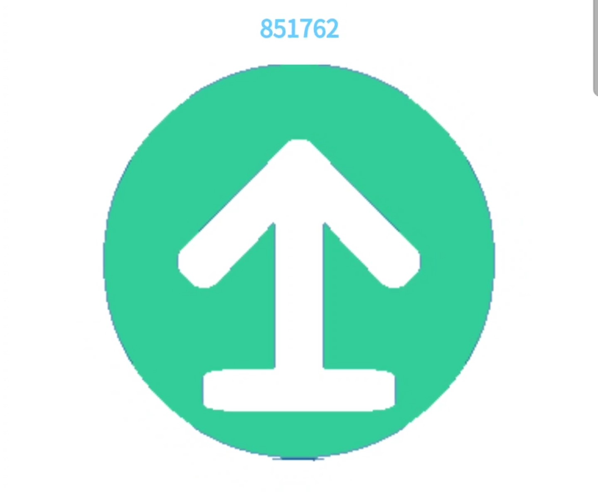

<!DOCTYPE html>
<html>

<head>
	<meta charset="utf-8">
	<title> 沈阳航空航天大学出入登记 </title>
</head>

<body style="background-color:white;font-family:arial;">

	<div id="footer" style="background-color:#ffffff;clear:both;text-align:center;">
		<font color="#71D0FF"> 沈航学生出门登记 </font>

	</div>

	<div id="footer" style="background-color:#ffffff;clear:both;text-align:center;">
		

		</img>
	</div>

	<div id="footer" style="background-color:#ffffff;clear:both;text-align:center;">
		
		<font id="ymd" color="#71D0FF"> </font>
		<p id="ymd"></p>
	
		<script>
		function mytime() {	
			var date = new Date()<!--获得日期数据-->
			var y = date.getFullYear();<!--年-->
			var m = date.getMonth()+1;<!--月，这里的月份必须要+1才是当前月份-->
			var d = date.getDate(); <!--日，getDay是获得当前星期几（0-6），getDate是获得当前日期-->
			
			var h = date.getHours();
			var s = date.getSeconds();
			document.getElementById("ymd").innerHTML = "时间："+y+"-"+m+"-"+d +" "+ h +":"+s;
		}
	
		setInterval(function () { mytime() }, 1000);
		
		</script>
	</div>

</body>

</html>